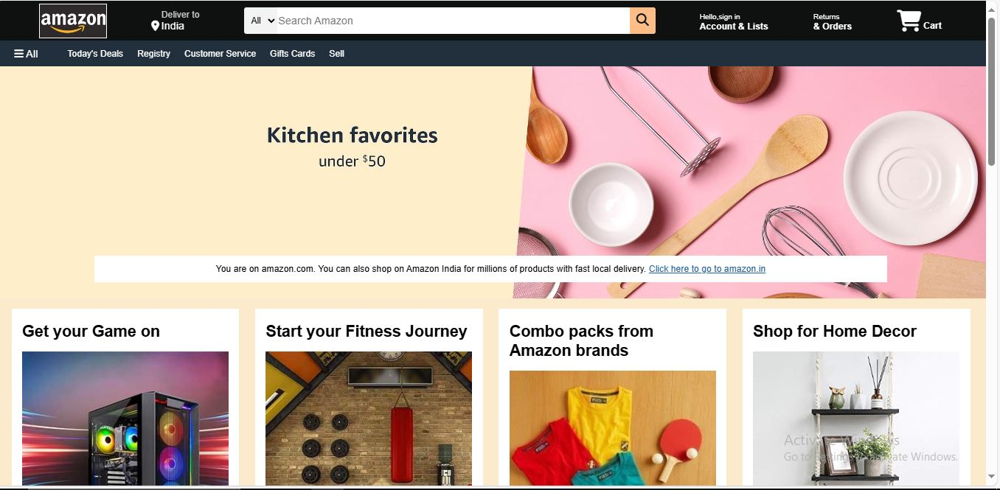
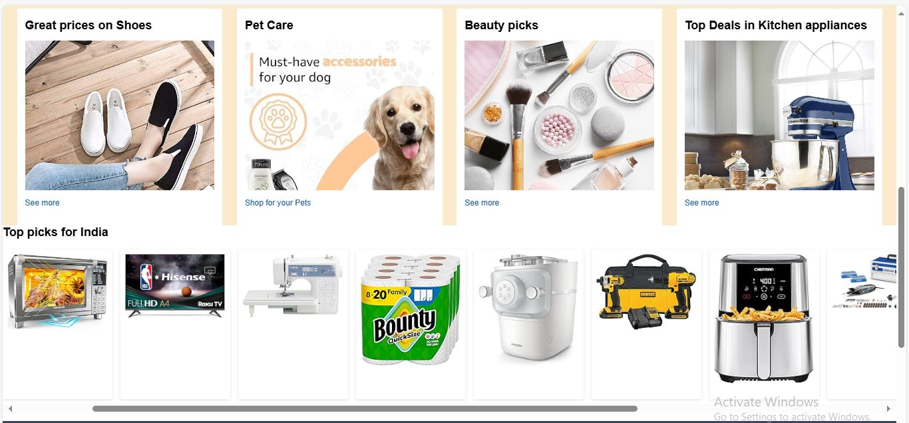
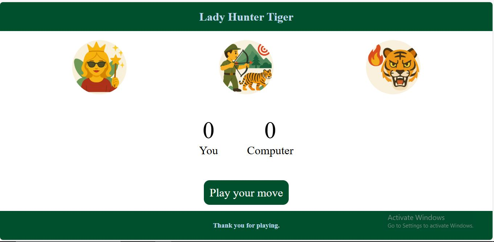

REETRISHA PRAMANICK.
Hello, I am an Electronics and Communication engineering student at Narula Institute of Technology, passionate about AI, hardware analytics and software enginerring.
.png)
Hello, I am an Electronics and Communication engineering student at Narula Institute of Technology, passionate about AI, hardware analytics and software enginerring.


Description about project:
I have made a clone of homepage of Amazon.com with HTML and CSS. My project features 8 interactive content boxes highlighting categories of Gaming, Fitness, Amazon Brands, Home Decor, Deals on Shoes, Pet Care, Make-up and kitchen appliances. A horizontal scroll section at the end of 8 interactive boxes highlights "Top Picks for India," allowing users to browse multiple products seamlessly. The project helped me learn about the different kinds of HTML tags and various CSS properties. I have learnt about the wide usage of Flexbox in CSS. With this knowledge i am working on various other projects.

Description about project:
I have built a very popular game which is "Lady Hunter and Tiger" with the help of HTML, CSS and JAVASCRIPT. The game provides three options that are "Lady" , "Hunter" , "Tiger". The game is between the user and computer where computer generates a random choice of its and after every round the score gets updated for user or computer whoever wins that round and an appropriate message is displayed. Through this project i have learnt about the various properties and efficient use of arrow functions in Javascript.
Description about project:
Project: Student Moods in Class Technologies: HTML, CSS, JavaScript, Chart.js (via CDN) | Group Project (5 Members) This project is a creative and interactive web application that visualizes the different moods students experience during a class session. Developed as a team of five, the application captures five distinct moods — Happy, Neutral, Sad, Angry, and Excited — and displays each with a unique visual effect and corresponding emoji for an engaging, user-friendly experience: